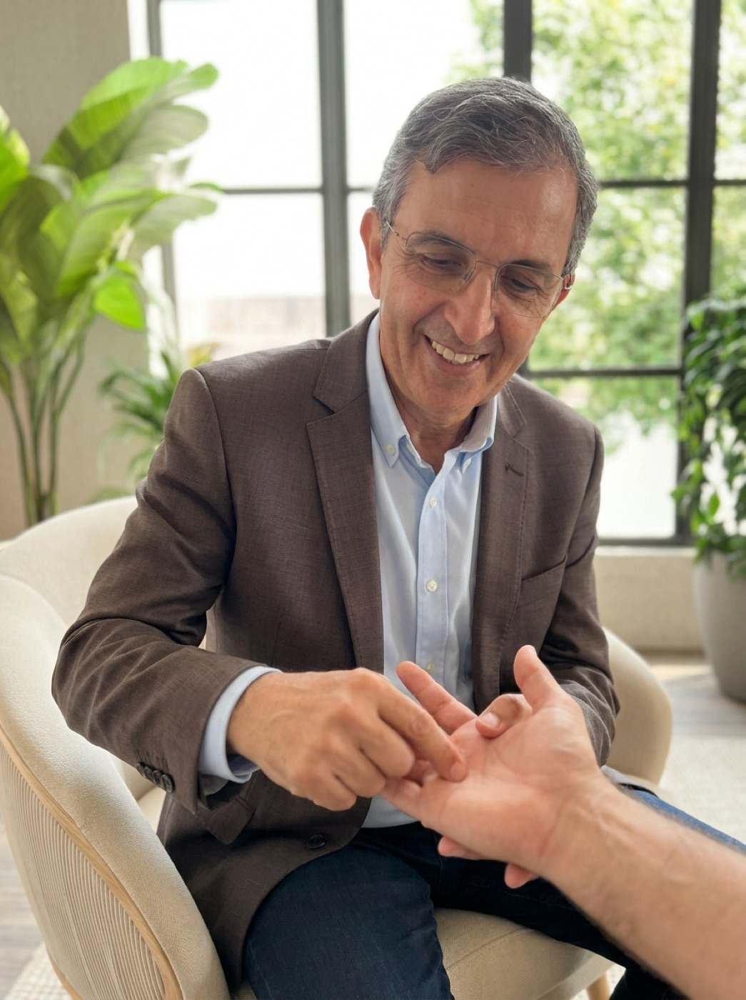

Dr Noureddine BoulaguiemHoméopathie · Sujok · Maroc
Programme de formation
Formation
Sujok
Niveau 1 · Les fondamentaux
Le point de départ, sans aucun prérequis. On y pose les bases : d'où vient le Sujok, comment lire la main et le pied, et comment appliquer les premiers gestes.

6 modules
1 journée de 8 h par module
Aucun prérequis
Attestation de participation